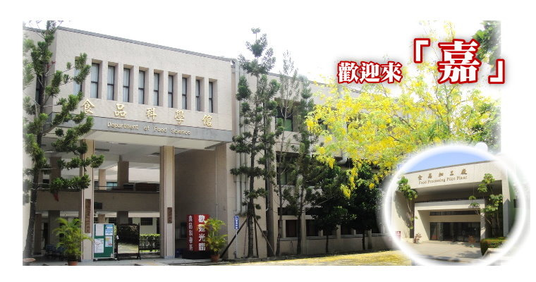

教育理念
理論與實作並重
傳授工業專業知識與技術
灌輸品德倫理觀念
著重基礎能力
本系採理論與實務並重原則，著重基礎能力，並加強食品工業專業知識與技術之傳授，以培養食品專業人才。
其教育特色以培養兼具食品科學理論專業知識與實用技能之人才，以擔負食品製造、管理、創新、企劃等之實務及研發能力，以期為食品工業界提供專才，促進經濟發展。在實際教學上，採理論與實務並重原則，著重基礎能力，並加強食品工業專業知識與技術之傳授。另加以品德倫理觀念之灌輸，培育具有專業知識及敬業精神的中堅幹部。 食品科技為民生工業最重要的一環，營養豐富且安全衛生的食品是促進且保障國人健康的屏障，達到此種目標需要食品科技人才不斷的貢獻心力，本系的教育目標即在培育國力維繫及國家發展不可或缺的食品科技人才。配合科技發展與國家社會之需求，除了傳統的食品加工與研究外，本系也強化在食品生技、健康食品、慢性病預防食品等新興項目之研究與開發。
食品科技是需要結合學術理論與實際應用的一個學門，本系學生需要先接受完整的一般基礎學科訓練，此類課程包括微積分、物理、有機化學、分析化學、生物化學、微生物學等課程。專業基礎課程則包括食品化學、食品微生物、營養學、食品工程、食品單元操作等課程。本系實用課程包括有罐頭製造學、食品脫水學、食品冷凍學、食品原料學、食品添加物、蔬果加工、畜產加工、穀類加工、發酵學等課程。本系最突出的特色在於實用課程均配合實驗或實習，以強化理論與實務之結合。
教學設備
教學研究大樓
食品加工實習工廠
食品教學與研究之現代儀器
新式食品加工與生產裝置
本系擁有教學研究大樓一棟，並設有全國最大之「食品加工實習工廠」一棟。
系內備有各型食品教學與研究之現代儀器，計有原子吸收光譜儀、氨基酸分析儀、毛細管電泳、冷凍離心機、冷凍乾燥機、超臨界萃取設備、氣相質譜儀、液相層析、氣相層析等多套分析儀以供實驗、研究所需。
實習工廠設置各類新式食品加工與生產製造用裝置，有自動真空氮氣充填裝置、冰淇淋製造機、旋轉式殺菌釜、個別急速冷凍裝置、乳化均質機、封罐機、噴霧乾燥機及真空油炸機等。以最現代化的儀器與完美設備，提供教學、實驗、研究與推廣，成果極其豐碩。
未來發展方向
生涯發展
繼續升學
進入職場
1. 升學方面：
本系畢業生可選擇報考進入本校、台大及中興等國內外大學等生命科學相關研究所修習碩、博班 ，取得更高等之學位。
2. 就業方面：
（1） 可參與國家考試，就業於政府行政部門、技術輔導及研究部門。
（2） 國內外公私立之研究或產業研究機構或食品工業等民間企業。
（3） 在學期間報考並完成本校中等師資培育課程，取得教師資格。
（4） 可就業相關農會、台糖畜殖場、牧場、加工廠、食品廠、飼料廠、添加物及相關私人或法人機構。
（5）自行創業。
系所展望
鼓勵交流
建立研究計畫

持續增添設備
產學合作
鼓勵學術活動
1. 在改善教學方面，鼓勵現職教師至國內外大學或研究機構進行學術交流；增聘學有專長產學界人士至本所開課。
2. 在提昇研究競爭力方面，鼓勵不同專長老師互相配合建立研究團隊，研擬大型整合研究計畫，爭取研究經費。
3. 持續增添最先進之教學研究設備，確保研究品質。
4. 持續推動產學合作，結合產業界加強推廣輔導，以達學術界與產 業界相得益彰之效，加速食品工業之發展。
5. 鼓勵教師參加學術活動並發表研究成果，並積極爭取主辦國內、 國際性學術研討會，以提高學術水準。
系所歷史
民國 8年 4月 創校，原名「臺灣公立嘉義農林學校」。
民國37年 8月 增設「農產製造科」。
民國54年 3月 改制為專科學校，名為「臺灣省立嘉義農業專科學校」，設立「農產加工科」。
民國60年 7月 夜間部增設農產加工科。
民國64年 8月 增設二年制日間部，設食品加工科。
民國65年 4月 夜間部農產加工科易名為食品加工科。
民國70年 7月 改制為「國立嘉義農業專科學校」。
民國78年 8月 食品加工科易名為「食品工業科」。
民國86年 7月 改制為「國立嘉義技術學院」，設一「食品科學系」 。
民國89年 2月 升格為「國立嘉義大學」，增設「食品科學研究所」碩士班。
民國89年 9月起 進修推廣部改為二年制技術系。
民國92年 8月起 進修推廣部增設四年制學士班。
民國95年 8月起 「食品科學研究所」碩士班分組為「食品科技組」及「保健食品組」。
民國95年 8月起 進修推廣部二年制技術系停招，增設「二年制在職專班」。
民國95年 8月起 日間部二年制技術系停招，大學部增額為兩班。
民國96年 8月起 日間部「食品科學博士班」、「食品科學暨生物藥學研究所碩士在職專班」正式開始招生。
民國100年 8月起 「食品科學暨生物藥學研究所碩士在職專班」正式更名為「食品科學研究所碩士在職專班」。
民國37年 8月 增設「農產製造科」。
民國54年 3月 改制為專科學校，名為「臺灣省立嘉義農業專科學校」，設立「農產加工科」。
民國60年 7月 夜間部增設農產加工科。
民國64年 8月 增設二年制日間部，設食品加工科。
民國65年 4月 夜間部農產加工科易名為食品加工科。
民國70年 7月 改制為「國立嘉義農業專科學校」。
民國78年 8月 食品加工科易名為「食品工業科」。
民國86年 7月 改制為「國立嘉義技術學院」，設一「食品科學系」 。
民國89年 2月 升格為「國立嘉義大學」，增設「食品科學研究所」碩士班。
民國89年 9月起 進修推廣部改為二年制技術系。
民國92年 8月起 進修推廣部增設四年制學士班。
民國95年 8月起 「食品科學研究所」碩士班分組為「食品科技組」及「保健食品組」。
民國95年 8月起 進修推廣部二年制技術系停招，增設「二年制在職專班」。
民國95年 8月起 日間部二年制技術系停招，大學部增額為兩班。
民國96年 8月起 日間部「食品科學博士班」、「食品科學暨生物藥學研究所碩士在職專班」正式開始招生。
民國100年 8月起 「食品科學暨生物藥學研究所碩士在職專班」正式更名為「食品科學研究所碩士在職專班」。